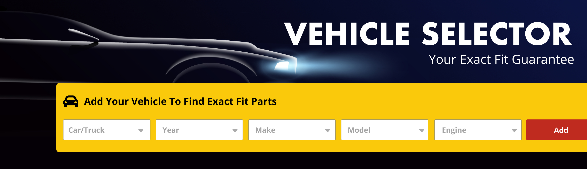
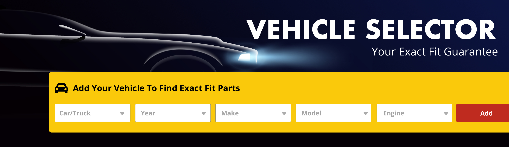
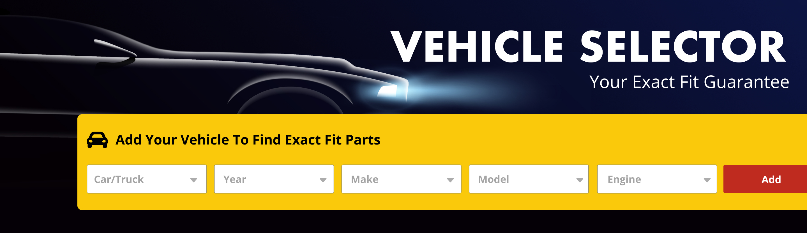
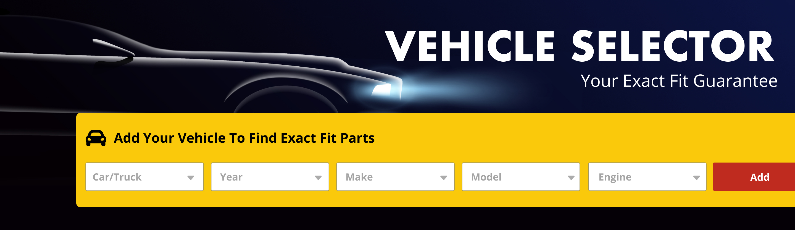

Unlike other products, automotive parts and accessories need to be specified with fitment data so that customers know if the part will fit their vehicle. Some parts have wide compatibility and other parts only fit specific years, makes, and models.
The challenge was to reduce the number of online returns by ensuring customers that they are purchasing the correct parts for their vehicle.
Analysis • Design • Prototype • Testing
A vehicle selector and “virtual garage” feature existed already, but customers were not utilizing it at a high rate.
Identify and design a solution for all user touchpoints along the path-to-purchase where customers need to be made aware of fitment information.
We knew through analytics that customers who entered their vehicle information were 92% less likely to return a product due to improper fitment. First, we needed to understand why customers were not using this feature.
After conducting user testing and corroborating with the analytics team, it became clear the primary issue was discoverability.
With a focus on discoverability I went though many different iterations and ideas but nothing tested well. Every solution was either too annoying or too subtle. Eventually I did hit upon what I call "The Guided Approach."
Inspired by modern onboarding techniques, this design would use color to grab the user’s attention and then guide them through the process of adding a vehicle, showing them where to access their virtual garage, and how to search for vehicle specific parts.
If a user is not logged into their account, or a vehicle has not been added previously, a yellow “add vehicle” widget will appear as part of the page design.
The bright color allows the widget to stand out without completely overshadowing the promotional offer(s).
After the user inputs their vehicle information, the widget disappears, and a success notification is shown below the vehicle selector dropdown.
This confirms the successful input of vehicle data and draws the user’s eye to the vehicle dropdown and search functions which are the next steps in the path-to-purchase.
By utilizing cookies or saving account data, the next time the user visits or logs in, they would not see the widget and their most recent vehicle would be pre-selected in the dropdown.
Repeated testing showed that removing the widget for returning users did not negatively impact the usage of the feature. It also had the added benefit of returning visual precedence to the current promotion(s).
In a perfect world, users would always choose the ideal user flow. But what if a user doesn’t add a vehicle? What if the entry point is to a page other than the homepage? How do we make the user aware of fitment information if they add an item to their cart that doesn’t fit? All of these use cases had to be considered.
After outlining the user flow and identifying the other most common entry points and use cases, it became clear we needed to message fitment information on the Product Listing Page, Product Description Page, and the Shopping Cart.
After careful consideration and many failed attempts at a universal design, it became apparent that each of the page types would need its own custom solution to the fitment problem.
If a user has a vehicle selected the PLP poses no problem because we filter search results based on vehicle type. The primary challenge was to encourage users who didn’t have a vehicle selected to add one.
The solution was to mimic the homepage widget approach at the top of the search results while also adding some helper text to each product description. The helper text explained why we wanted the vehicle information, and the widget’s bright color gave users an easy way to do that without having to navigate away.
The PDP solution had to account for 3 different scenarios: The product is a perfect fit. The product does not fit, and we don’t know if the product fits because we have no vehicle information.
By using the same helper text found in the PLP solution I was able to provide a consistent pattern that users could recognize to ensure proper fitment consistently.
For the scenarios where the part does not fit or is unknown, a red page banner is used to redirect the user towards a compatible part or encourage them to input their vehicle information.
Users may be shopping for more than one vehicle at a time. The shopping cart needed to be able to handle multiple vehicles and products at the same time, while providing clear compatibility details for each product, and offer users an easy way to add or manage their vehicles.
As shown in the example above, I ended up using the existing helper text and page banner patterns already established. Testing had shown that this approach provided users with clear confirmation of compatibility and gave them the confidence to complete their purchase.
Making sure the customer gets the right part in the traditional store environment is easy. When I started this project, giving them that same assurance online was much more difficult. Because the vehicle information is so important for the customer’s experience the amount of effort and time put into this was considerable. While you always hope for the best, the results were well beyond even my wildest of expectations.
The first few months after these features were implemented, we saw a 72% increase in vehicle selector engagement and an 85% reduction in online returns caused by improper fitment. In the time that has passed all of the other major auto parts retailers have adopted a similar approach to solving these problems.
In an effort to comply with non-disclosure agreements, copyright law, and intellectual property rights, I have omitted and obfuscated some information in this case study. All information presented is my own and does not necessarily reflect the position, views, or official policy of any company, organization, or government agency.
UX Case Studies


Oil Bundle Builder


Help Desk